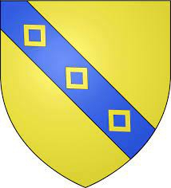

93888 Sir William Sinclair 1st Earl of Caithness
* omkring 1410 Caithmess, Scotland
† 1484 Kirkcaldy, Scotland
Baron, Lord, Earl
Blev ca 74 år
* omkring 1410 Caithmess, Scotland
† 1484 Kirkcaldy, Scotland
Baron, Lord, Earl
Blev ca 74 år

187776 Sir Henry II Sinclair, Earl of Orkney
* omkring 1375 Rosslyn Castle, Edinburgh, Scotland
† 1422 Orkney Islands, Scotland
Greve av Orkneyöarna
Blev ca 47 år
* omkring 1375 Rosslyn Castle, Edinburgh, Scotland
† 1422 Orkney Islands, Scotland
Greve av Orkneyöarna
Blev ca 47 år
375552 Earl Henry I Sinclair, Earl of Orkney
* 1345 Rosslyn Castle, Edinburgh, Scotland
† omkring 1400 Orkney Islands, Scotland
Greve av Orkneyöarna
Blev ca 55 år
* 1345 Rosslyn Castle, Edinburgh, Scotland
† omkring 1400 Orkney Islands, Scotland
Greve av Orkneyöarna
Blev ca 55 år
751104 Lord William II Sinclair
* före 1328 Roslin Castle, Midlothian, Scotland
† omkring 1379 Roslin Castle, Midlothian, Scotland
Lord och Baron av Roslin
* före 1328 Roslin Castle, Midlothian, Scotland
† omkring 1379 Roslin Castle, Midlothian, Scotland
Lord och Baron av Roslin

751105 Lady Isabella of Strathearn
* omkring 1328 Perth, Scotland
† omkring 1410 Orkney Islands, Scotland
Hertiginna av Caithness, Baronessa av Roslin
Blev ca 82 år
* omkring 1328 Perth, Scotland
† omkring 1410 Orkney Islands, Scotland
Hertiginna av Caithness, Baronessa av Roslin
Blev ca 82 år

375553 Jean Halyburton
* omkring 1350 Dirleton, East Lothian, Scotland
† 1400 Midlothian, Scotland
Blev ca 50 år
* omkring 1350 Dirleton, East Lothian, Scotland
† 1400 Midlothian, Scotland
Blev ca 50 år
751106 John Haliburton
* före 1346-04 Haliburton, Berwicksshire, Scotland
† efter 1402
Blev minst 56 år
* före 1346-04 Haliburton, Berwicksshire, Scotland
† efter 1402
Blev minst 56 år
751107 Margret Cameron
* omkring 1320 Baledgarno Castle, Inchture, Scotland
† omkring 1380 Dirleton, East Lothian, Scotland
Blev ca 60 år
* omkring 1320 Baledgarno Castle, Inchture, Scotland
† omkring 1380 Dirleton, East Lothian, Scotland
Blev ca 60 år

187777 Lady Egidia Jill Douglas
* 1380 Nithsdale, Dumfries-shire Scotland
† 1438 Orkney Islands, Scotland
Blev högst 58 år
* 1380 Nithsdale, Dumfries-shire Scotland
† 1438 Orkney Islands, Scotland
Blev högst 58 år
375554 Sir William Douglas, Lord of Nithsdale
* omkring 1364 Nithsdale, Dumfries-shire Scotland
† 1392 Dumfries-shire, Scotland
Lord
Blev ca 28 år
* omkring 1364 Nithsdale, Dumfries-shire Scotland
† 1392 Dumfries-shire, Scotland
Lord
Blev ca 28 år
751108 Lord Archibald Douglas of Douglas
* omkring 1330 Scotland
† 1400-12-24 Treave Castle, Scotland
Greve av Douglas & Wigtown, Lord av Douglas & Galloway & Bothwell
Blev ca 70 år
* omkring 1330 Scotland
† 1400-12-24 Treave Castle, Scotland
Greve av Douglas & Wigtown, Lord av Douglas & Galloway & Bothwell
Blev ca 70 år

375555 Princess Egidia Stewart of Lounane, Princess of Scotland
* omkring 1368 Dundonald Castle, Ayrshire, Scotland
† omkring 1388 Scotland
Prinsessa av Scotland
Blev ca 20 år
* omkring 1368 Dundonald Castle, Ayrshire, Scotland
† omkring 1388 Scotland
Prinsessa av Scotland
Blev ca 20 år
751110 Kung Robert II (Stuart) of Scotland
* 1316-03-02
† 1390 Dundonald, Ayrshire, Scotland
Kung av Scotland
Blev högst 74 år
* 1316-03-02
† 1390 Dundonald, Ayrshire, Scotland
Kung av Scotland
Blev högst 74 år
751111 Queen Euphemia Ross, Countess of Moray
* omkring 1329 Cromarty, Scotland
† efter 1394-09-05 Scotland
Drottning av Scotland
* omkring 1329 Cromarty, Scotland
† efter 1394-09-05 Scotland
Drottning av Scotland